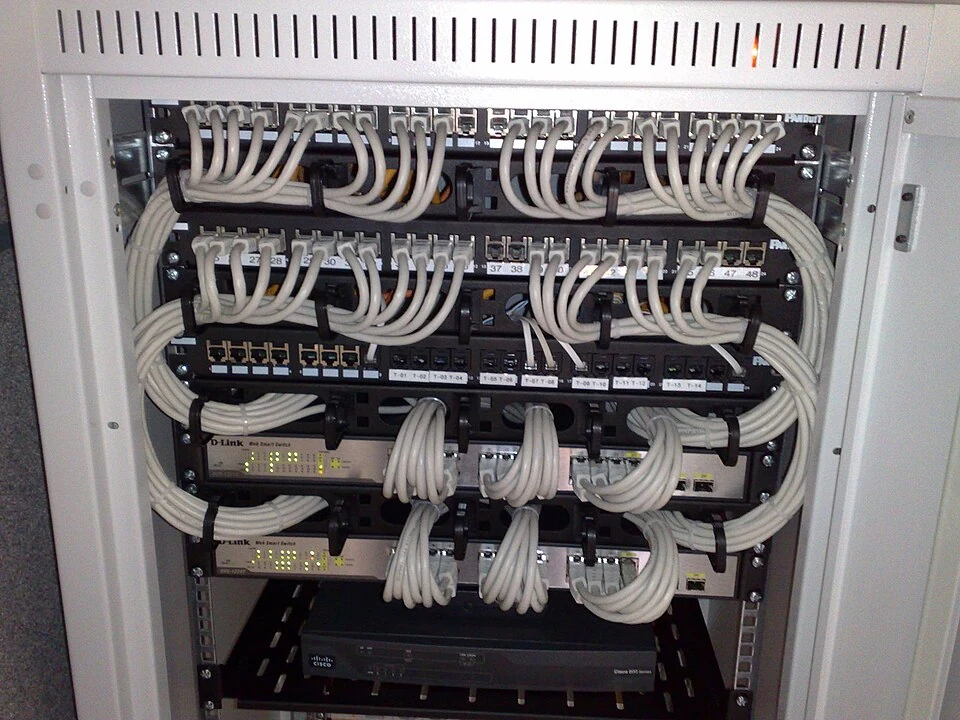
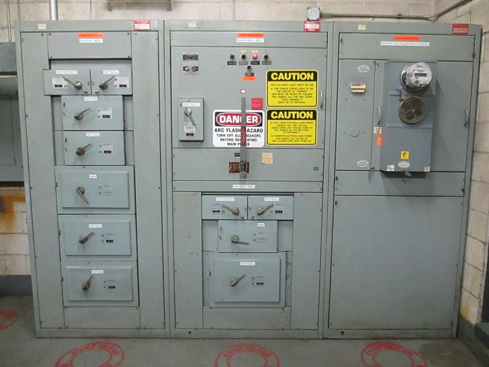
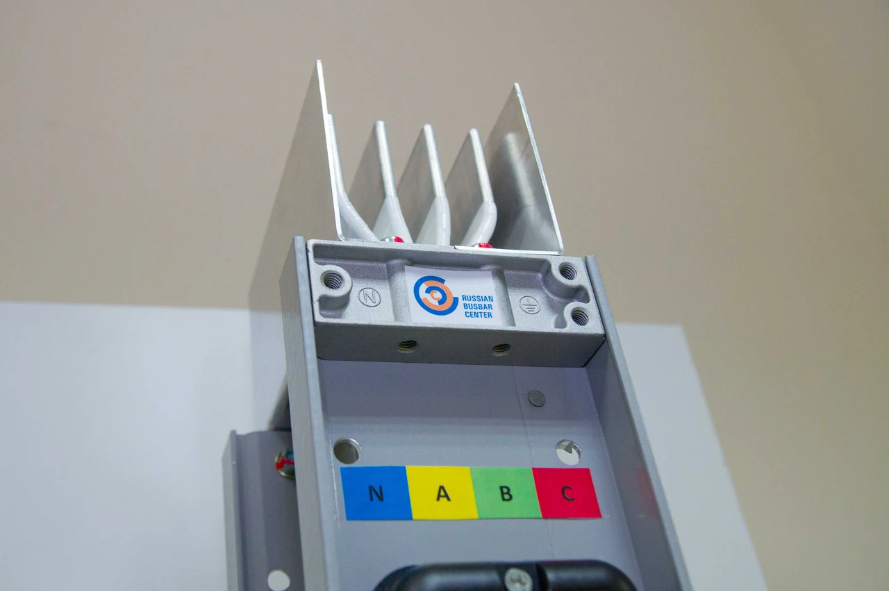
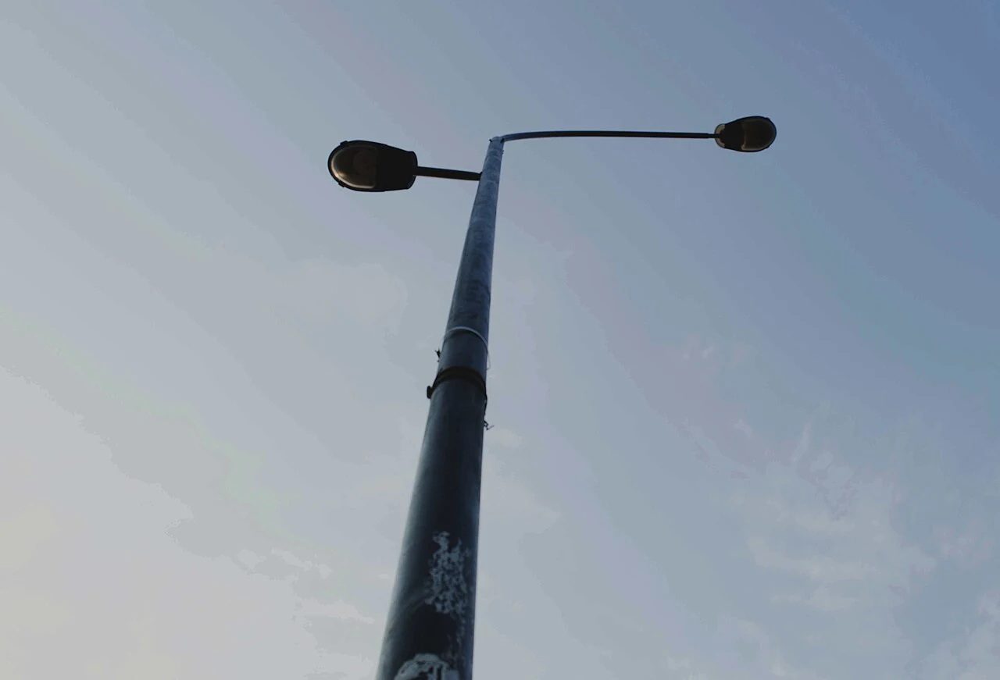
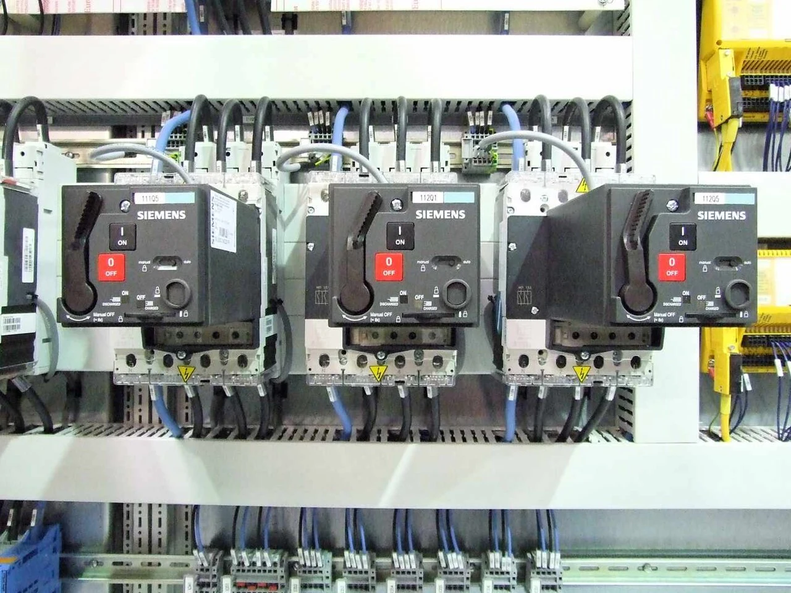

Low-current systems
Original title: 19-inch rackmount Ethernet switches and patch panels.jpg
- Author
- Dsimic
Web version: 960 × 720 pixels · WebP · resized and converted; no subject alterations.
SANAN COMPANY / IMAGE REFERENCES
The five photographs below illustrate equipment and systems in our specialist services. They are technical reference photographs, not photographs of Sanan Company projects. Their authors and original sources are credited here.
Web preparation: these photographs were resized to a maximum edge of 1,280 pixels and converted to WebP. Their subjects were not altered. Each web version is provided under the same Creative Commons license shown beside its original. Attribution does not imply the photographer endorses Sanan Company.

Original title: 19-inch rackmount Ethernet switches and patch panels.jpg
Web version: 960 × 720 pixels · WebP · resized and converted; no subject alterations.

Original title: Electrical Main and distribution panel for 480 volt.JPG
Web version: 1,280 × 960 pixels · WebP · resized and converted; no subject alterations.

Original title: Шинопровод.jpg
Web version: 1,280 × 852 pixels · WebP · resized and converted; no subject alterations.

Original title: Street light pole.jpg
Web version: 1,280 × 871 pixels · WebP · resized and converted; no subject alterations.

Original title: Typical contents of a control panel for automated equipment.jpg
Web version: 1,280 × 960 pixels · WebP · resized and converted; no subject alterations.
The medium-voltage, MV & LV cable, and electrical installation cards reuse photographs already held in Sanan Company’s website collection. The Creative Commons credits above apply only to the five separately credited technical reference photographs.